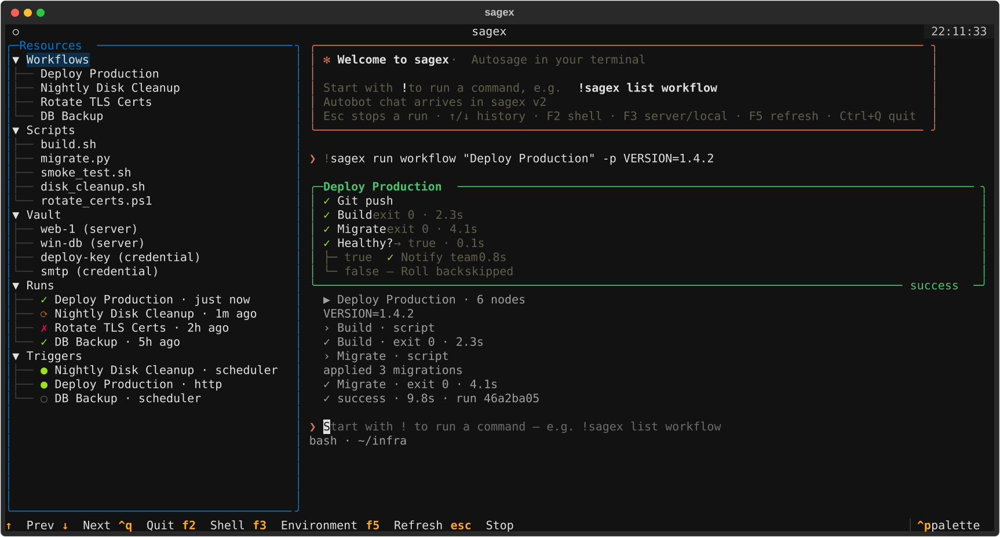

Run it now
Run any workflow or script and follow it live. Ctrl+C cancels, and the logs land in your workspace.
$ sagex run workflow Deploy \
-p VERSION=1.4.2SageCode is the command line for Autosage. One command, sagex, to build, version and run workflows on your servers. Start them by hand, by webhook, on a schedule or from CI, and watch every node live.
$curl -LsSf https://sagecode.web.app/install.sh | sh
PS>irm https://sagecode.web.app/install.ps1 | iex
$uv tool install sagex-cli
Example: a workflow run, started by a webhook, a schedule, a CI job or by hand, streaming node by node in SageCode.
Start a workflow by hand, from a webhook, on a cron schedule or from your CI pipeline. SageCode streams each one live, node by node, as it runs on your servers.
Run any workflow or script and follow it live. Ctrl+C cancels, and the logs land in your workspace.
$ sagex run workflow Deploy \
-p VERSION=1.4.2One command creates an HTTP trigger; trigger poll follows its runs. Every call carries an Idempotency-Key, so retries never run twice.
$ sagex trigger create Deploy \
-t httpFive-field cron in UTC, validated by the scheduler itself. SageCode shows the next runs, then can wait for one and follow it.
next run in …$ sagex trigger create Backup \
-t schedule \
--cron "0 2 * * *"Set SAGEX_API_KEY and call SageCode from any pipeline. The exit code follows the run, so a failed deploy fails the build.
$ sagex run workflow Deploy \
-p VERSION=$GITHUB_SHAKeep workflows and scripts as plain files in git, next to the code they deploy. Edit them in your own editor; SageCode shows you exactly what changes before anything reaches the server.
Run sagex on its own to open a full-screen app: your resources on the left, a live transcript on the right. Start any command with ! and watch workflow runs draw themselves.

Tap to view full size ↗SageCode never connects to your servers itself. It talks to the Autosage API over HTTPS; Autosage validates, queues and executes the work, then streams every line back.
The SageCode CLI or terminal app, authenticated with an API key from your OS keychain.
HTTPS · X-API-KeyStores workflows, scripts and vaults, checks each run, and owns the webhooks and the scheduler.
REST · queue · cronFetch the script, fill in its parameters and connect to the target, streaming output as it happens.
SSH · WinRM · SMTPEvery line flows back as server-sent events, to SageCode, the web app, or both at once.
SSESageCode handles server passwords, SSH keys and webhook secrets. It's built so none of them end up in your shell history, your workspace or a stray screenshot.
Your API key lives in Credential Manager, Keychain or Secret Service. CI jobs use SAGEX_API_KEY.
Passwords and keys go in at hidden prompts, or from a file you point to. Never as flags.
Credentials can't be copied to disk. show key keeps values hidden unless you pass --reveal and confirm.
A webhook's secret appears exactly once, when it's created or rotated. The server keeps only a hash.
SageCode follows semantic versioning and ships from tagged releases straight to PyPI. Here's where it's headed.
Workflows, scripts, vaults, triggers and live runs, from your terminal.
See your SageCode sessions on your Autosage account page.
Chat, generate, run and fix, with your last command's output as context.
Then log in with your API key and run sagex.
$curl -LsSf https://sagecode.web.app/install.sh | sh
PS>irm https://sagecode.web.app/install.ps1 | iex
$uv tool install sagex-cli